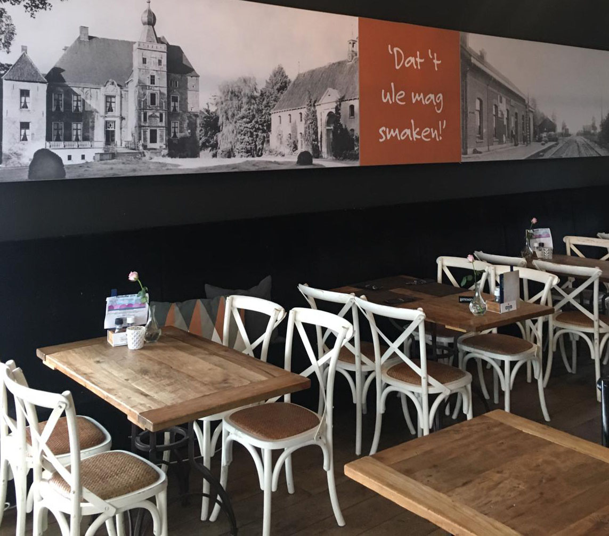
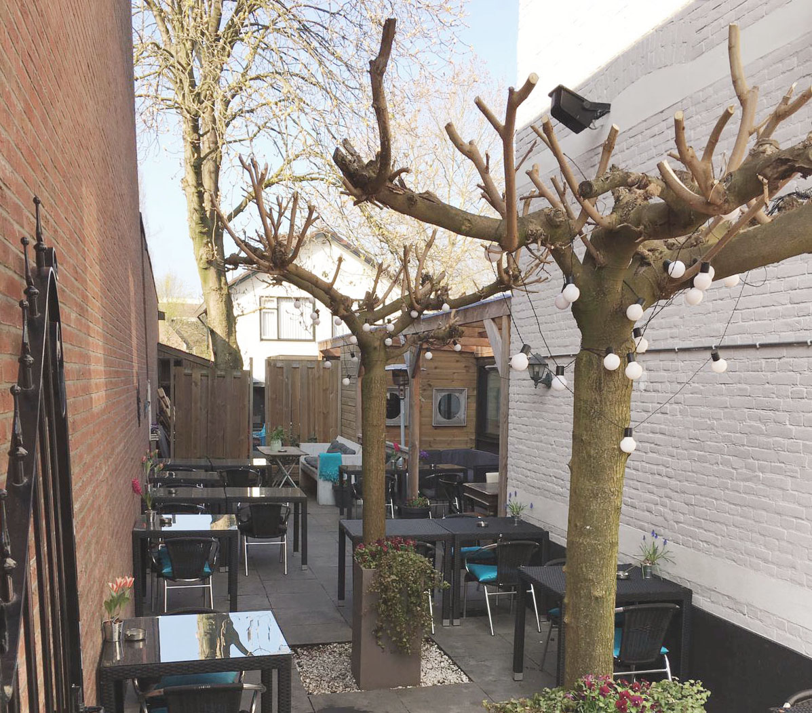
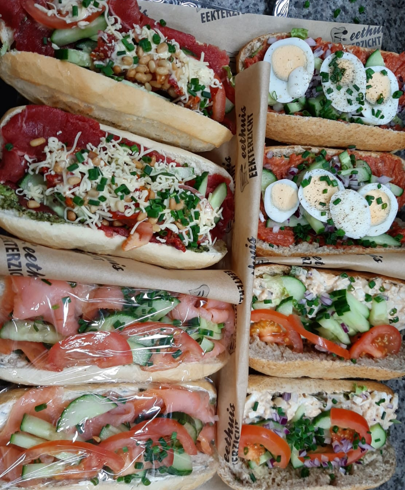

High tea mini
€ 22,00 p.p.
- Onbeperkt thee of 2 kopjes koffie
- Soep van de chef
- Broodje carpaccio
- Sandwich eiersalade
- Salade brie en stoofpeer
- Gevuld wrapje met pulled chicken
- Nacho's
- Warme appeltjes met slagroom
- 2 wisselende lekkernijen
Eethuis in het centrum van Vaassen
Koffie met gebak, een uitgebreid ontbijt, high tea, lunch en een lekkere borrel. En elke dinsdag is de keuken open voor diner.
Ma 9.30 - 17.00 · di 9.30 - 20.00 · wo t/m za 9.30 - 17.00

In ons gezellige eethuis in het centrum van Vaassen kunt u terecht voor een kop koffie of thee met gebak, een heerlijk ontbijt, gezellige high tea, lunch, diner en een lekkere borrel. In de zomer kunt u heerlijk vertoeven op ons terras.
Ook voor een (besloten) feestje, zowel bij ons in het eethuis als bij u op locatie, voor ontbijtservice aan huis, broodjesservice zowel zakelijk als particulier, catering en het huren van retro scooters staan wij voor u klaar. Voor meer informatie gaan wij graag met u in gesprek over uw persoonlijke wensen.
"Heeft u een klacht, zeg het ons. Bent u tevreden, zeg het anderen!"

Omdat wij iedereen een kans op de arbeidsmarkt willen geven, wordt ons team sinds een aantal jaren aangevuld door talenten met een beperking. Deze beperkingen zijn niet altijd zichtbaar aan de buitenkant.
Wij vragen uw begrip als de dingen net een beetje anders gaan dan anders.
Een high tea reserveert u minimaal 1 dag van tevoren.
€ 22,00 p.p.
€ 27,00 p.p.
€ 12,50 p.p.
€ 21,25 p.p.
Te bestellen vanaf 2 personen, vooraf reserveren is gewenst.

Eekterzicht biedt u de mogelijkheid broodjes te bestellen en te laten bezorgen, zakelijk en particulier.
Het ruime aanbod warme en koude broodjes vindt u op ons bestelformulier. U kunt de broodjes telefonisch of per mail bestellen. Afhalen is natuurlijk ook mogelijk.
Buiten ons bestelformulier is bijna alles in overleg mogelijk. Denk bijvoorbeeld aan een lunchbuffet met broodjes, yoghurt, soep en drinken. We informeren u graag over de mogelijkheden.
Laat een heerlijk ontbijtje bezorgen, bijvoorbeeld voor een verjaardag, huwelijk, vaderdag, moederdag, valentijnsdag, Pasen of kerst. Het geheel wordt leuk verpakt op een dienblad en met servies bezorgd. Het servies blijft eigendom van Eekterzicht.
€ 17,50 p.p.
€ 22,50 p.p.
€ 29,95 p.p.
€ 9,50 p.p.
Alleen te bestellen in combinatie met een van de andere ontbijtjes.
Alle ontbijtjes kunnen natuurlijk uitgebreid worden, bijvoorbeeld met een krant, tijdschrift, bloemen, extra vleeswaren, kaas, vis en nog veel meer. Vraag naar de mogelijkheden.
Wij verzorgen ook uw feest op locatie of in onze zaak. Van een hapje en drankje tot lunches en buffetten. Op zondag zijn we open voor besloten feestjes. Wij bespreken uw persoonlijke wensen graag met u.
Kleine schnitzels van Slagerij ter Weele, geserveerd met gebakken champignon, ui, spek en paprika, champignonroomsaus, gebakken krieltjes met spek en ui, warme seizoensgroenten, rundvleessalade en stokbrood met kruidenboter.
Royaal opgemaakte rundvleessalade, aardappelsalade, stokbrood met kruidenboter, malse kippendijen in satésaus, mini schnitzels met gebakken champignon, ui, paprika en spek, Gelderse beenham met honingmosterdsaus, gebakken krieltjes met spek en ui en warme seizoensgroenten.
Luxe visplateau met zalmsalade, gerookte zalm, makreel, haring met uitjes en garnalen. Etagère met hapjes: stokbroodje brie, wrapje carpaccio, gevuld eitje en een hamrolletje. Royaal opgemaakte rundvleessalade, aardappelsalade, stokbrood met smeersels, soep van de chef, gegrilde vis (verse dagvangst), huisgemaakt runderstoofvlees, spareribs, malse kippendijen in satésaus, gebakken krieltjes met spek en ui, nasi, warme seizoensgroenten, mayonaise en huisgemaakte knoflooksaus.
Hutspot, oma's stamppot zuurkool, stamppot boerenkool met spekjes, ambachtelijke rookworst, gehaktballetjes in jus, mosterd, augurk, zilveruitjes en piccalilly.
Optioneel (tegen meerprijs): huisgemaakt stoofpotje, spareribs, oma's erwtensoep. In de zomer serveren wij zomerstamppotten.
Huisgemaakte tiramisu, diverse soorten ijs (bij bezorging niet mogelijk), vers fruit, diverse zoetigheden en slagroom.
Uitgaande van een feestavond van 20.00 tot 00.00 uur of van 20.30 tot 00.30 uur. U kunt uw arrangement ook geheel naar eigen wens samenstellen.
Wilt u iets buiten het assortiment om bestellen? Dan kan dat natuurlijk.
Op dinsdag, schnitzeldag, geweest! Heerlijk gegeten en we gaan zeker gauw nog eens eten!
Jolanda
Super lekker gegeten, grote porties voor een goede prijs.
Fam. Kofman
Super gezellig tentje. Vaak genoeg even heerlijk geluncht tussen het werk door. Snelle en zeer goede service.
Nick Buitenhuis
Reserveren: 0578 - 623992
Mail: info@eekterzicht.nl
| Maandag | 9.30 - 17.00 |
|---|---|
| Dinsdag | 9.30 - 20.00 (diner) |
| Woensdag | 9.30 - 17.00 |
| Donderdag | 9.30 - 17.00 |
| Vrijdag | 9.30 - 17.00 |
| Zaterdag | 9.30 - 17.00 |
| Zondag | gesloten (wel open voor besloten feestjes) |
Keuken open van 10.00 tot 16.30 uur, op dinsdag ook voor diner.